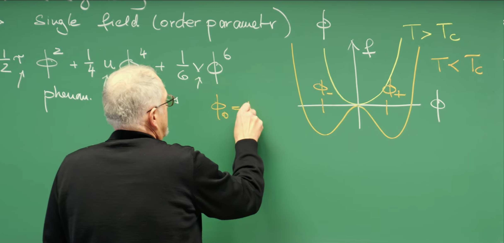
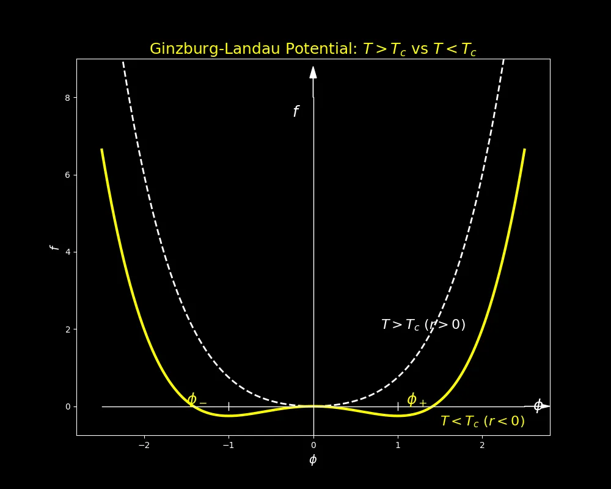
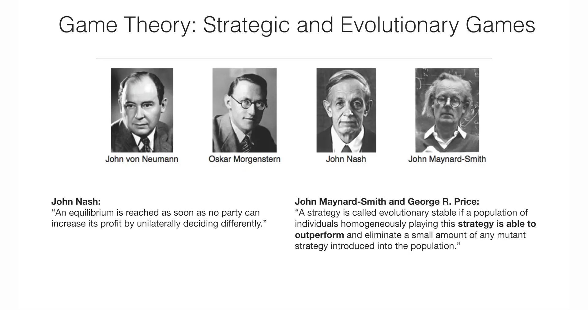
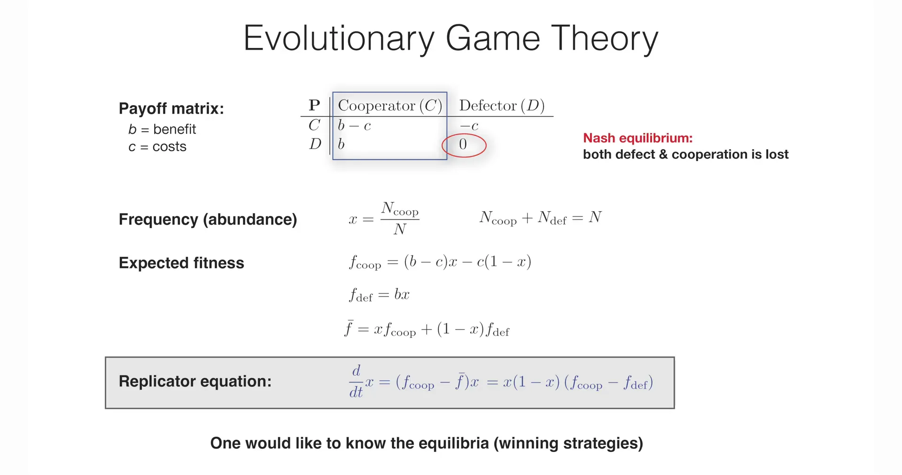
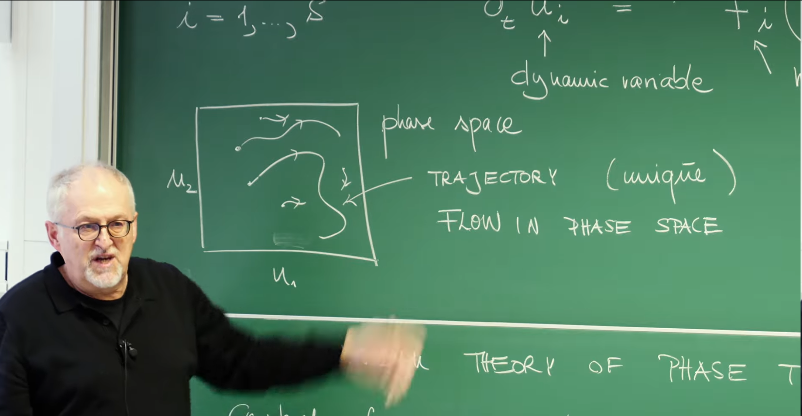

引言¶
第1讲课程导探讨了自组织现象的核心思想：普适性 (universality) 从鸟群的集体飞翔到细胞内蛋白质的精确定位，宏观有序模式的涌现似乎遵循着不依赖于微观细节的普适规律。能否为这些看似无关的系统建立一个统一的、具有预测能力的理论框架？ 为此课程将分三个理论部分展开：
-
动力系统理论 (Dynamic Systems Theory)
-
相变与集体现象 (Phase Transitions & Collective Phenomena)
-
模式形成与自组织 (Pattern Formation & Self-Organisation)
第2讲开始“动力系统”部分的介绍。这部分将引入一套数学语言，用以描述系统状态如何随时间演化 (evolution)、变化 (change) 和稳定 (stabilization)。这节课将从两个截然不同的科学领域出发，展示动力系统理论的威力与普适性：
-
物理学视角下的相变理论： 以金茨堡-朗道理论 (Ginzburg-Landau Theory) 为例，展示如何仅基于对称性和观测现象等基本物理原则，构建一个描述物质从无序到有序转变的唯象模型。
-
生物学视角下的策略演化： 以演化博弈论 (Evolutionary Game Theory) 为例，展示如何用数学模型描述生物种群中不同策略（如合作与背叛）的动态竞争与最终命运。
尽管这两个理论的起源和应用场景大相径庭，但它们都体现了唯象建模 (phenomenological modeling) 的精髓：通过识别系统中关键的宏观自由度（序参量 \(\phi\) 或策略频率 \(x\)），并为其建立动力学方程，从而绕开复杂的微观细节，直击集体行为的本质。无论是描述磁铁的相变还是种群的演化，其背后都隐藏着相同的数学结构——非线性常微分方程 (Nonlinear Ordinary Differential Equations)，以及相空间 (phase space)、吸引子 (attractors)（或不动点）和分岔 (bifurcations) 等共通的几何概念。这些概念也为后续课程深入探讨不动点的稳定性和分岔的具体类型（如鞍结分岔、叉式分岔）奠定了基础。
1. 金茨堡-朗道理论：一种关于有序的物理学¶
这小节将介绍第一个核心理论框架——金茨堡-朗道 (Ginzburg-Landau) 理论。这是统计物理学中描述相变的经典理论，也是唯象建模 (phenomenological modeling) 的典范。它绕开了系统微观细节，转而从宏观的对称性 (symmetry) 和观测现象出发，构建一个有效的自由能函数，以此来描述和预测系统从无序到有序的转变。
1.1 序参量：将集体行为浓缩于单一变量¶
为了描述一个宏观系统的状态，追踪其内部每一个微观组分（如原子、分子）的运动是不可行的。因此，需要一种如导论中提到的“粗粒化 (coarse-graining)”描述方式。金茨堡-朗道理论的核心起点是引入一个宏观变量，称为序参量 (order parameter) ，记为 \(\phi\)。
序参量是一个精心选择的物理量，它能够量化系统整体的有序程度。它的定义具有以下关键特征：
-
在系统的无序相（通常在高温或高熵状态，如顺磁相），序参量的值为零。
-
在系统的有序相（通常在低温或低熵状态，如铁磁相），序参量的值非零。
例如，在铁磁性材料中，序参量可以是净磁化强度 \(M\)。在顺磁相（高温, \(T > T_c\)），各个原子的磁矩方向随机，宏观净磁化为零；而在铁磁相（低温, \(T < T_c\)），磁矩趋于同向排列，系统出现非零的净磁化强度。同样，对于气液相变，序参量可以是液体和气体密度之差。

通过引入序参量 \(\phi\)，一个拥有海量微观自由度的复杂系统被简化为一个仅由单一变量描述的宏观实体，为后续构建能量模型奠定了基础。
1.2 构建自由能：由对称性决定的能量景观¶
在确定了序参量后，下一步是构建一个描述系统能量的函数，即自由能 (free energy) \(f(\phi)\)。在热力学中，系统的稳定平衡态对应于自由能的最小值点。因此，这个函数 \(f(\phi)\) 可以被想象成一个“能量景观”，系统的状态会自发地“滚向”景观中的最低点。
根据朗道的假设，在相变临界点附近，序参量 \(\phi\) 的值很小。因此，自由能 \(f(\phi)\) 可以被（解析地）展开为关于 \(\phi\) 的泰勒级数。这个展开式的具体形式受到系统对称性 (symmetry) 的严格约束。
以具有“上/下”对称性的伊辛模型为例，系统在没有外磁场时，将所有自旋反转（\(\phi \rightarrow -\phi\)）不会改变系统的能量。这种对称性反映在自由能函数上，即 \(f(\phi)\) 必须满足 \(f(\phi) = f(-\phi)\) 的关系，也就是说，自由能必须是 \(\phi\) 的偶函数。这个强大的对称性约束排除了泰勒展开中所有奇数次幂的项（如 \(\phi, \phi^3, \phi^5\) 等），只保留偶数次幂的项。
因此，对于这类系统，自由能函数 \(f(\phi)\)（在板书中也记为 \(\mathcal{V}(\phi)\)）最一般的形式可以写为：
这是一个截断的泰勒级数，通常保留到 \(\phi^6\) 项足以描述大多数一级和二级相变。
常数项 \(f(0)\) 被省略了，因为它只是对能量零点的平移，不影响能量景观的形状和最小值点的位置。
系数 \(\frac{1}{2}, \frac{1}{4}, \frac{1}{6}\) 是历史约定，它们使得后续在计算动力学方程（求导 \(\frac{\partial f}{\partial \phi}\)）时形式更简洁。
这个方程是金茨堡-朗道理论的核心。它并非从第一性原理推导而来，而是一个基于对称性和解析性假设构建的唯象模型。其中的系数 \(r, u, v\) 是唯象参数，其具体数值需要通过实验或更底层的微观理论来确定。
1.3 唯象参数 (r, u, v) 的物理意义与调控作用¶
自由能函数中的参数 \(r, u, v\) 共同决定了能量景观的形状，从而控制着系统的相变行为。
\(r\) (控制参数): 这个参数是相变的主要驱动力，它直接关联于系统与临界点的"距离"。在物理学中，它通常与温度 \(T\) 线性相关，可以近似写为 \(r \propto (T - T_c)\)，其中 \(T_c\) 是临界温度。\(r\) 的正负号决定了能量景观在原点 \(\phi=0\) 附近的基本形态：
当 \(r > 0\) (\(T > T_c\)) 时，\(\phi^2\) 项为正，在 \(\phi=0\) 附近 \(f(\phi) \approx \frac{1}{2} r \phi^2\) 是一个开口向上的抛物线。此时 \(\phi=0\) 是自由能唯一的最小值点。这对应于系统稳定的无序相（例如顺磁相）。
当 \(r < 0\) (\(T < T_c\)) 时，\(\phi^2\) 项为负，原点 \(\phi=0\) 从最小值点变为局部最大值点（变得不稳定）。能量景观在两侧出现两个新的对称的最小值点，位于 \(\phi_\pm = \pm \phi_0\)。这对应于系统进入了稳定的有序相（例如铁磁相）。系统必须“选择”其中一个最小值（\(+\phi_0\) 或 \(-\phi_0\)），这个过程被称为自发对称性破缺 (spontaneous symmetry breaking) 。

\(u\) 和 \(v\) (稳定性参数): 这两个参数决定了能量景观的高阶形状（即远离 \(\phi=0\) 时的行为），并确保能量有下界（即 \(f(\phi) \rightarrow \infty\) 当 \(|\phi| \rightarrow \infty\) 时），从而决定了相变的类型：
当 \(u > 0\) 时，\(\phi^4\) 项保证了当 \(\phi\) 很大时自由能是正的，使得能量景观有界。在这种情况下，当 \(r\) 从正变负时，序参量 \(\phi_0\) 从零连续地变为非零值，这对应于二级相变 (second-order phase transition) 或称连续相变。
当 \(u < 0\) 时，仅有 \(\phi^4\) 项会使系统在 \(r<0\) 时不稳定（能量会奔向负无穷）。此时必须引入一个 \(v > 0\) 的 \(\phi^6\) 项来确保能量有下界。这种由 \(r, u, v\) 共同构成的复杂能量景观会导致序参量发生不连续的跳变，对应于一级相变 (first-order phase transition) 或称不连续相变。
1.4 Python模拟：可视化金茨堡-朗道势¶
下面的代码实践可视化了金兹堡-朗道(Ginzburg-Landau)理论中的自由能势函数随温度变化的行为。它展示了两种不同温度条件下的系统状态：当温度高于临界温度(\(T>T_c\))时，系统只有一个全局最小值点，对应于对称相；当温度低于临界温度($T<T_c \()时，系统出现两个对称的最小值点，表示系统发生了对称性破缺，进入了有序相。这种可视化帮助我们理解相变过程中系统的动力学行为和稳定性，以及序参量（在这里是\)\phi$）如何随着温度变化而改变其平衡态。
import numpy as np
import matplotlib.pyplot as plt
def ginzburg_landau_potential(phi, r, u):
"""
Calculate the Ginzburg-Landau free energy potential (v=0).
"""
return 0.5 * r * phi**2 + 0.25 * u * phi**4
# --- Use dark background as a base ---
plt.style.use('dark_background')
# --- Create a single figure and axes with default dark background ---
fig, ax = plt.subplots(figsize=(10, 8))
# --- Parameters ---
u = 1.0
phi_range = np.linspace(-2.5, 2.5, 400) # Focus on the central region
# --- Plot the T > Tc (r > 0) case (White Curve) ---
r_pos = 1.0
f_pos = ginzburg_landau_potential(phi_range, r_pos, u)
# Plot in white, mimicking the professor's drawing
ax.plot(phi_range, f_pos, lw=2, color='white', linestyle='--')
# Add text annotation
ax.text(0.8, 2.0, '$T > T_c$ ($r > 0$)', color='white', fontsize=16)
# --- Plot the T < Tc (r < 0) case (Yellow Curve) ---
r_neg = -1.0
f_neg = ginzburg_landau_potential(phi_range, r_neg, u)
# Plot the potential curve in yellow
ax.plot(phi_range, f_neg, lw=3, color='yellow')
# Add text annotation
ax.text(1.5, -0.5, '$T < T_c$ ($r < 0$)', color='yellow', fontsize=16)
# --- Calculate minima for T < Tc ---
minima_phi = np.sqrt(-r_neg / u)
minima_f = ginzburg_landau_potential(minima_phi, r_neg, u)
# --- Add text annotations like the blackboard ---
# Add "f" (for the y-axis)
ax.plot([0, 0], [minima_f - 0.5, 8.0], color='white', lw=1)
ax.arrow(0, 8.0, 0, 0.5, color='white', head_width=0.08, head_length=0.3)
ax.text(-0.25, 7.5, '$f$', color='white', fontsize=18)
# Add "phi" (for the x-axis)
ax.plot([-2.5, 2.5], [0, 0], color='white', lw=1)
ax.arrow(2.5, 0, 0.2, 0, color='white', head_width=0.1, head_length=0.1)
ax.text(2.6, -0.1, '$\phi$', color='white', fontsize=18)
# Add "phi_+" and "phi_-" for the T < Tc minima
ax.text(minima_phi + 0.1, minima_f + 0.3, '$\phi_+$', color='yellow', fontsize=18)
ax.text(-minima_phi - 0.5, minima_f + 0.3, '$\phi_-$', color='yellow', fontsize=18)
# Add small vertical ticks for the minima
ax.plot([minima_phi, minima_phi], [-0.1, 0.1], color='white', lw=1)
ax.plot([-minima_phi, -minima_phi], [-0.1, 0.1], color='white', lw=1)
# --- Add arrows (annotations) to show dynamics for T < Tc ---
arrow_props = dict(facecolor='white', edgecolor='none', arrowstyle='->', lw=2)
# Arrow from (phi > phi_+) downhill
ax.annotate('', xy=(minima_phi + 0.3, minima_f + 0.1),
xytext=(1.8, 1.0),
arrowprops=arrow_props)
# Arrow from (phi < -phi_+) downhill
ax.annotate('', xy=(-minima_phi - 0.3, minima_f + 0.1),
xytext=(-1.8, 1.0),
arrowprops=arrow_props)
# Arrow from (0 < phi < phi_+) downhill
ax.annotate('', xy=(0.3, minima_f),
xytext=(0.6, -0.1),
arrowprops=arrow_props)
# Arrow from (-phi_+ < phi < 0) downhill
ax.annotate('', xy=(-0.3, minima_f),
xytext=(-0.6, -0.1),
arrowprops=arrow_props)
# --- Clean up the plot ---
ax.grid(False) # Turn off grid
# 显示坐标轴刻度标签
# ax.set_xticklabels([])
# ax.set_yticklabels([])
# 显示坐标轴边框
# ax.spines['top'].set_visible(False)
# ax.spines['right'].set_visible(False)
# ax.spines['bottom'].set_visible(False)
# ax.spines['left'].set_visible(False)
ax.spines['top'].set_visible(True)
ax.spines['right'].set_visible(True)
ax.spines['bottom'].set_visible(True)
ax.spines['left'].set_visible(True)
# 设置坐标轴标签
ax.set_xlabel('$\phi$', color='white', fontsize=14)
ax.set_ylabel('$f$', color='white', fontsize=14)
# Set plot limits
ax.set_xlim(-2.8, 2.8)
ax.set_ylim(min(f_neg) - 0.5, 9.0) # Adjust y-limit to show both curves
plt.title('Ginzburg-Landau Potential: $T > T_c$ vs $T < T_c$', color='yellow', fontsize=18)
plt.savefig('Ginzburg-Landauyon.png')
plt.show()

相变的核心思想：相变是能量景观的拓扑形变。
白色虚线代表高温 \(T > T_c\)（\(r > 0\)）时的状态。此时自由能 \(f\) 是一个单井势，其唯一的能量最低点（稳定态）在 \(\phi=0\)，这对应于系统的无序相（例如顺磁相）。
黄色实线代表低温 \(T < T_c\)（\(r < 0\)）时的状态。当温度降低到临界点以下，能量景观发生了质变：原先在 \(\phi=0\) 处的稳定点“凸起”成一个不稳定的局部最高点，同时在两侧对称地“凹陷”出两个新的、能量更低（\(f < 0\)）的最低点 \(\phi_-\) 和 \(\phi_+\)。这两个新的井底代表了系统“自发对称性破缺”后形成的两个等价的有序相（例如磁化方向“上”或“下”），系统必须选择其中一个。
整个相变过程就被可视化为能量势从白色曲线平滑地转变为黄色曲线的过程，这个转变是由控制参数 \(r\) 穿越 \(r=0\) 这个临界点（即分岔点）所驱动的。
2. 弛豫动力学：通往平衡之路¶
通过金茨堡-朗道理论，成功地将相变问题简化为对一个“能量景观”——即自由能 \(f(\phi)\) ——的分析。这个静态的景观告诉了我们系统所有可能的平衡态（即 \(f(\phi)\) 的极值点）以及它们的相对稳定性（即 \(f(\phi)\) 的最小值点）。然而，这个模型并没有回答一个关键问题：如果系统一开始不处于最低点，它将如何随时间演化？演化到最低点需要多长时间？
本节的目的就是引入动力学 (dynamics) ，将静态的能量景观转变为一个动态的演化过程。我们将推导出一个关于序参量 \(\phi(t)\) 随时间变化的运动方程 (equation of motion) ，并证明这个方程确实会引导系统“滚向”自由能的最低点。
2.1 最小自由能原理与翁萨格假设¶
对于一个与环境（热库）有能量交换的耗散系统 (dissipative system) ，热力学第二定律的一个推论是，系统会自发地向自由能更低的状态演化，最终达到自由能最小的平衡态。
那么，如何将这个热力学趋势转化为一个具体的数学方程呢？翁萨格 (Onsager) 的理论为此提供了关键的唯象假设。该假设认为，系统状态的变化率（“流”）正比于将其推向平衡态的“热力学力”。
-
热力学力 (Thermodynamic Force): 在金茨堡-朗道的能量景观中，推动序参量 \(\phi\) 变化的“力”可以被定义为自由能景观的负梯度（即最陡峭的下坡方向）：\(F_{thermo} = - \frac{\partial f}{\partial \phi}\)。
-
线性响应 (Linear Response): 翁萨格假设变化率 \(\partial_t \phi\) 与这个力成正比：\(\partial_t \phi \propto F_{thermo}\)。
这个假设是连接热力学（静态的 \(f\)）和动力学（动态的 \(\partial_t \phi\)）的桥梁。
2.2 动力学方程：\(\partial_t \phi = -\Gamma \frac{\partial f}{\partial \phi}\)¶
基于翁萨格的线性响应假设，可以写出描述序参量 \(\phi\) 随时间演化的最简单的动力学方程，这在临界动力学中被称为模型A (Model A) ，或称纯弛豫动力学：
这个方程的各项具有清晰的物理意义：
-
\(\partial_t \phi(t)\)：序参量随时间的变化率。
-
\(\frac{\partial f}{\partial \phi}\)：自由能景观的梯度或斜率。当斜率为零时（在景观的最低点或最高点），热力学力为零，\(\partial_t \phi = 0\)，动力学停止。这些点因此被称为不动点 (fixed points) 。
-
负号 "\(-\)"：确保了系统的演化方向。如果 \(\phi\) 位于能量最低点的右侧，则斜率 \(\frac{\partial f}{\partial \phi} > 0\)，导致 \(\partial_t \phi < 0\)，\(\phi\) 将减小（向左移动）；反之亦然。这保证了系统总是沿着能量景观的下坡方向演化。
-
\(\Gamma\)：一个正的动力学系数 (kinetic coefficient) ，也称为迁移率 (mobility) 。它描述了系统对热力学力的响应速度，决定了弛豫过程的时间尺度 。\(\Gamma\) 越大，系统向平衡态“滚动”得越快。
将第一节中构建的自由能 \(f(\phi) = \frac{1}{2} r \, \phi^2 + \frac{1}{4} u \, \phi^4 + \frac{1}{6} v \, \phi^6\) 代入上式，求导后便得到了一个具体的常微分方程 (ODE) ：
此处的 \(\phi^5\) 项自于对 \(\frac{1}{6} v \phi^6\) 项的求导。至此，复杂的相变问题被成功地简化为了求解这个非线性常微分方程的动力学问题。
2.3 自由能作为李雅普诺夫函数¶
我们已经构建了一个动力学方程，它“看起来”总是驱使系统走向能量最低点。但能否在数学上严格证明这一点呢？这便是通过将自由能 \(f\) 识别为一个李雅普诺夫函数 (Lyapunov function) 来实现的。
李雅普诺夫函数 \(V(x)\) 是动力系统理论中一个强大的工具，用于证明平衡点的稳定性，而无需直接求解微分方程。一个函数要成为李雅普诺夫函数，必须满足两个核心条件：
1.正定性： 函数在平衡点处有最小值（好比一个碗的形状）。
2.导数负定性： 函数沿着系统演化的轨迹，其时间导数永不增加（\(\frac{dV}{dt} \le 0\)）。
现在来检验金茨堡-朗道自由能 \(f(\phi)\) 是否满足第二个条件。其随时间的变化率可以通过链式法则计算：
接着，将我们推导出的动力学方程 \(\frac{d\phi}{dt} = -\Gamma \frac{\partial f}{\partial \phi}\) 代入上式：
-
动力学系数 \(\Gamma\) 是一个正数 (\(\Gamma > 0\))。
-
平方项 \(\left( \frac{\partial f}{\partial \phi} \right)^2\) 永远是非负的 (\(\ge 0\))。
因此，我们可以得出结论：
这严格证明了自由能 \(f\) 在弛豫动力学过程中永不增加。系统状态点永远不会“爬坡”，只会停留在原地或向更低的能量水平移动，即“在自由能景观上下坡” (downhill on the free energy landscape)。
动力学过程何时停止呢？当且仅当 \(\frac{df}{dt} = 0\) 时。这要求 \(\frac{\partial f}{\partial \phi} = 0\)，而这正是第一节中定义的静态平衡点（不动点）。这个证明将第一节的静态分析（寻找 \(f\) 的最小值）和第二节的动力学分析（\(\phi\) 的时间演化）严谨地联系在了一起。
3. 相变即分岔¶
在前两节中，我们建立了金茨堡-朗道理论的静态和动态图像。第一节展示了系统的静态平衡态由自由能 \(f(\phi)\) 的能量景观决定。第二节为其增加了动力学，即 \(\partial_t \phi = -\Gamma \frac{\partial f}{\partial \phi}\)，展示了系统如何演化以达到这些平衡态。
本节将这两个概念联系起来，揭示一个深刻的等价关系：物理学中的相变，在数学上正是一种被称为分岔 (bifurcation) 的现象。我们将看到，能量景观的拓扑形变（第一节）与动力学不动点（第二节）的定性改变，是同一个故事的两种表述。
3.1 动力系统中的分岔¶
在动力系统理论中，分岔指的是当系统的某个控制参数（如金茨堡-朗道理论中的 \(r\)）平滑地变化并通过一个临界值时，系统行为发生定性改变的现象。这里的"定性改变"不是指数值的微小变化，而是指系统不动点 (fixed points)（或称平衡点）的数量或其稳定性发生了根本性的改变。
3.2 金茨堡-朗道理论中的叉式分岔¶
金茨堡-朗道动力学（二级相变模型）是超临界叉式分岔 (supercritical pitchfork bifurcation) 的一个经典范例。
首先，寻找系统的不动点 \(\phi^*\)。不动点是系统状态不再随时间变化的点，即 \(\frac{d\phi}{dt} = 0\)。根据第二节的动力学方程（为简单起见，设 \(v=0\)）：
令 \(\partial_t \phi = 0\)，由于 \(\Gamma > 0\)，我们只需要求解：
现在，我们来分析不动点 \(\phi^*\) 如何随控制参数 \(r\) 的变化而改变（假设 \(u>0\)）：
当 \(r > 0\) (\(T > T_c\)) 时： * 由于 \(u > 0\) 且 \(\phi^2 \ge 0\)，项 \(r + u\phi^2\) 恒为正。
-
因此，方程 \(\phi(r + u\phi^2) = 0\) 唯一的实数解是 \(\phi^* = 0\)。
-
稳定性： 这个不动点是稳定的。从能量景观上看，它是自由能唯一的最小值点（单井）。对应于物理上的无序相。
当 \(r < 0\) (\(T < T_c\)) 时： * 此时方程变为 \(\phi(r + u\phi^2) = 0\)，它有三个实数解：
1. $\phi_0^* = 0$
2. $r + u\phi^2 = 0 \implies \phi^2 = -r/u \implies \phi_\pm^* = \pm\sqrt{-r/u}$
稳定性： * 原来的不动点 \(\phi_0^* = 0\) 现在变为不稳定的（它成了能量景观上的局部最高点）。
-
两个新出现的不动点 \(\phi_\pm^*\) 则是稳定的（它们是能量景观中的两个新的最小值点）。
-
这对应于物理上的有序相，系统发生了“自发对称性破缺”，必须选择 \(\phi_+\) 或 \(\phi_-\) 两个等价的稳定状态之一。
物理与数学的对应： 这个过程清晰地表明，物理上的二级相变——即系统从一个唯一的稳定状态（无序相）转变为两个新的稳定状态（有序相）——在数学上正是一个叉式分岔：一个稳定的不动点在 \(r=0\) 处失稳，同时“分岔”出两个新的稳定不动点和一个不稳定的不动点。
3.3 Python模拟：绘制分岔图¶
叉式分岔的行为可以通过分岔图直观地展示出来。该图描绘了系统不动点 \(\phi^*\) 的位置（纵轴）如何随控制参数 \(r\)（横轴）的变化而改变。
import numpy as np
import matplotlib.pyplot as plt
# --- Set dark background style ---
plt.style.use('dark_background')
# Define parameters
r_range = np.linspace(-2, 2, 400)
u = 1.0
# --- Calculate fixed points ---
# 1. For r < 0 (Ordered Phase)
r_neg = r_range[r_range < 0]
# The two new stable branches
phi_stable_pos = np.sqrt(-r_neg / u)
phi_stable_neg = -np.sqrt(-r_neg / u)
# The phi=0 branch becomes unstable
phi_unstable_zero = np.zeros_like(r_neg)
# 2. For r >= 0 (Disordered Phase)
r_pos = r_range[r_range >= 0]
# The phi=0 branch is stable
phi_stable_zero = np.zeros_like(r_pos)
# --- Create the plot ---
plt.figure(figsize=(10, 6))
# --- Plot the branches with visible colors ---
# Plot stable fixed points (solid bright lines)
plt.plot(r_neg, phi_stable_pos, 'cyan', lw=2.5, label='Stable Fixed Points ($\phi^* = \pm\sqrt{-r/u}$)')
plt.plot(r_neg, phi_stable_neg, 'cyan', lw=2.5)
plt.plot(r_pos, phi_stable_zero, 'cyan', lw=2.5)
# Plot unstable fixed point (dashed bright line)
plt.plot(r_neg, phi_unstable_zero, 'magenta', linestyle='--', lw=2, label='Unstable Fixed Point ($\phi^* = 0$)')
# --- Style the plot ---
plt.title('Supercritical Pitchfork Bifurcation in Ginzburg-Landau Model', fontsize=16)
plt.xlabel('Control Parameter $r \propto (T - T_c)$', fontsize=14)
plt.ylabel('Fixed Points $\phi^*$', fontsize=14)
# Add reference lines
plt.axhline(0, color='gray', linestyle='-', lw=1)
plt.axvline(0, color='gray', linestyle=':', lw=1, label='Bifurcation Point (r=0)')
plt.grid(True, linestyle=':', alpha=0.5, color='gray')
plt.legend(fontsize=12)
plt.ylim(-2, 2)
plt.xlim(-2, 2)
plt.show()

金茨堡-朗道模型的叉式分岔图。横轴是控制参数 \(r\)，纵轴是不动点 \(\phi^*\) 的位置。青色实线代表稳定不动点，洋红色虚线代表不稳定不动点。当 \(r\) 从正变负时，系统在 \(r=0\) 处发生分岔，原先唯一的稳定点 \(\phi^*=0\) 失稳，并产生两个新的稳定分支。
4. 演化博弈论：一种关于策略的生物学¶
在介绍了源于物理学的金茨堡-朗道理论后，课程转向了一个源于生物学和经济学的全新领域——演化博弈论 (Evolutionary Game Theory) 。此举旨在展示动力系统思想的普适性 (universality) 。
这种类比是深刻的： * 在金茨堡-朗道理论中，存在一个“势函数”——自由能 \(f(\phi)\) 。系统的动力学 \(\partial_t \phi = -\Gamma \frac{\partial f}{\partial \phi}\) 驱使序参量 \(\phi\) 演化到 \(f(\phi)\) 的最低点 。
- 在演化博弈论中，同样存在一个关键函数——适应度 \(f(x)\) (fitness) 。系统的动力学（即下一节将要介绍的“复制子方程”）将驱使策略比例 \(x\) 演化到 \(f(x)\) 的最高点 。
两者都是由一个“势函数”决定的非线性动力学问题，其核心都是研究状态变量（\(\phi\) 或 \(x\)）如何随时间演化并达到稳定的不动点。
4.1 从经典博弈到演化博弈：纳什 vs. 梅纳德·史密斯¶
课程首先区分了两种博弈论的范式，这两种范式基于截然不同的假设：

-
经典博弈论 (Classical Game Theory): 以约翰·冯·诺伊曼 (John von Neumann)、奥斯卡·摩根斯坦 (Oskar Morgenstern) 和约翰·纳什 (John Nash) 的工作为代表。其核心假设是参与者是完全理性的。他们了解博弈的全部规则和所有参与者的可能收益，并在此基础上进行逻辑推演，做出能使自己利益最大化的最优决策。其核心概念是纳什均衡 (Nash Equilibrium) ，正如纳什所定义：“当没有任何一方可以通过单方面改变策略来增加其收益时，就达到了均衡。” 这是一个静态的、基于理性的平衡概念。
-
演化博弈论 (Evolutionary Game Theory): 以约翰·梅纳德·史密斯 (John Maynard Smith) 和乔治·普莱斯 (George R. Price) 的工作为代表。它放弃了完全理性的假设，转而考虑一个由大量个体组成的种群 。个体不进行逻辑推演，而是简单地遵循一个预设的行为策略（如同基因编码）。个体之间随机相遇并进行"博弈"，其收益直接转化为适应度 (fitness) ，即其繁殖成功率。成功的策略（高适应度）将在种群中通过“复制”而扩散开来，而不成功的策略则被淘汰。
其核心概念是演化稳定策略 (Evolutionary Stable Strategy, ESS) ，即“如果一个种群的个体一致地采用某个策略，并且该策略有能力胜过并消灭任何被引入种群的少量突变策略时，该策略就被称为演化稳定的。” ESS 是一个动态的、基于选择和复制的稳定性概念。对于本课程而言，演化博弈论这种基于种群和动力学的视角，使其成为研究自组织现象的理想框架。
4.2 定义博弈：合作者 vs. 背叛者¶

为了具体说明演化博弈论，课程采用了一个经典模型：囚徒困境 (Prisoner's Dilemma) 。在这个模型中，种群由两种策略的个体组成：合作者 (Cooperators, C) 和 背叛者 (Defectors, D) 。
博弈规则由两个参数定义：
收益 \(b\) (benefit): 合作行为为对方创造的价值。
成本 \(c\) (cost): 合作者为创造价值所付出的代价。
假设种群非常大（理论上无限大），个体之间随机相遇。设种群中合作者 (C) 的比例为 \(x\)（\(0 \le x \le 1\)），则背叛者 (D) 的比例为 \((1-x)\)。
此时，任何一个个体（无论是C还是D）在下一次博弈中遇到合作者 (C) 的概率是 \(x\)，遇到背叛者 (D) 的概率是 \((1-x)\)。基于此，可以计算出两种策略的期望适应度 (expected fitness) \(f\)：
合作者的期望适应度 \(f_{coop}\):
一个合作者 (C) 期望的收益是：
\(f_{coop} = (\text{遇到C的概率}) \times (\text{对C的收益}) + (\text{遇到D的概率}) \times (\text{对D的收益})\)
根据规则，C对C的收益是 \(b-c\)（得到收益，付出成本），C对D的收益是 \(-c\)（付出成本，无收益）。
整理得：
背叛者的期望适应度 \(f_{def}\):
一个背叛者 (D) 期望的收益是：
\(f_{def} = (\text{遇到C的概率}) \times (\text{对C的收益}) + (\text{遇到D的概率}) \times (\text{对D的收益})\)
根据规则，D对C的收益是 \(b\)（得到收益，不付成本），D对D的收益是 \(0\)（无收益，无成本）。
整理得：
物理/生物意义阐释：
这里的关键在于，\(f_{coop}\) 和 \(f_{def}\) 不是固定的常数，它们都依赖于当前种群的状态 \(x\) 。这意味着系统的“能量景观”（适应度景观）本身是动态变化的。当种群中合作者变多（\(x\) 增大）时，两种策略的适应度都会随之改变。这是一种非线性反馈 ，也是动力学复杂性的根源。
为了更清晰地展示，可以将此博弈整理成标准的收益矩阵 (payoff matrix) 形式，如PPT所示。下表展示了“行”玩家（焦点玩家）在面对“列”玩家（对手）时所获得的收益。
表1：囚徒困境的收益矩阵
| 对手是合作者 (C) | 对手是背叛者 (D) | |
|---|---|---|
| 玩家是合作者 (C) | \(b - c\) | \(-c\) |
| 玩家是背叛者 (D) | \(b\) | \(0\) |
与经典博弈论的联系：
在经典博弈论中，这个矩阵的四个收益值通常用符号表示：
\(R = b-c\) (Reward: 双方合作的奖励)
\(S = -c\) (Sucker: 合作者被背叛的“傻瓜”收益)
\(T = b\) (Temptation: 背叛合作者的诱惑)
\(P = 0\) (Punishment: 双方背叛的惩罚)
一个博弈构成真正的囚徒困境，需要满足收益排序 \(T > R > P > S\)。在我们的模型中，如果假设收益 \(b\) 大于成本 \(c\) (\(b>c>0\))，那么 \(b > b-c > 0 > -c\)，这个条件是满足的。这说明，对于单个的、理性的玩家来说，无论对方做什么，选择“背叛”总是最优策略（\(T>R\) 且 \(P>S\)），导致双方最终陷入 \(P=0\) 的“纳什均衡”，而不是 \(R=b-c\) 的集体最优解。
5. 复制子方程：选择的动力学¶
在第四节中，我们为演化博弈论建立了“静态”描述，即定义了不同策略（合作者C vs. 背叛者D）在给定种群状态 \(x\) 下的期望适应度 \(f_{coop}(x)\) 和 \(f_{def}(x)\) 。这类似于金茨堡-朗道理论中的自由能 \(f(\phi)\)，它为系统定义了一个“景观”。
现在，我们需要引入动力学，即一个描述策略频率 \(x(t)\) 如何随时间演化的运动方程。这个方程在演化博弈论中被称为复制子方程 (Replicator Equation) ，它扮演着与物理学中 \(\partial_t \phi = -\Gamma \frac{\partial f}{\partial \phi}\) 完全相同的角色：它为系统提供了演化的“力”和“规则”。
5.1 复制子方程的推导¶
复制子方程的基本思想非常直观：一个策略在种群中所占比例的增长率，正比于该策略的适应度与整个种群平均适应度之差。 换言之，比平均水平更“适应”的策略将会扩张，反之则会萎缩。
下面是该方程的详细推导步骤：
1.基本原理： 假设任何子种群（例如合作者）的数量增长率与其适应度成正比。设合作者数量为 \(N_c(t)\)，总种群数量为 \(N(t)\)，则有：
\(\frac{dN_c}{dt} = f_{coop} \cdot N_c\)
同理，背叛者数量 \(N_d\) 的增长率为 \(\frac{dN_d}{dt} = f_{def} \cdot N_d\)。
2.定义平均适应度 \(\bar{f}\): 整个种群的平均适应度是各种策略适应度的加权平均值，权重为其在种群中的比例。
因此，总种群的增长率为 \(\frac{dN}{dt} = \bar{f} \cdot N\)。
3.计算比例的变化率： 我们关心的核心变量是合作者所占的比例 \(x = \frac{N_c}{N}\) 如何随时间变化。使用导数的商法则：
4.代入增长率： 将第一步和第二步中的增长率表达式代入上式：
5.简化得到基本形式： 由于 \(x = \frac{N_c}{N}\)，上式可以简化为复制子方程的基本形式：
物理/生物意义阐释： 这个形式最能体现“选择”的本质。\(f_{coop} - \bar{f}\) 是合作策略的“相对适应度优势”。只有当一个策略比平均水平更好（\(f_{coop} > \bar{f}\)）时，它的比例 \(x\) 才会增加（\(\dot{x} > 0\)）。
6.推导实用形式： 在两种策略的博弈中，还可以进一步推导。将平均适应度 \(\bar{f} = x \cdot f_{coop} + (1-x) \cdot f_{def}\) 代入基本形式：
最终得到在两种策略博弈中更常用的实用形式：
这个形式同样直观：合作者比例 \(x\) 的变化，取决于两种策略适应度的直接竞争 \(f_{coop} - f_{def}\)。
5.2 动力学分析：不动点与稳定性¶
复制子方程是一个非线性常微分方程，其长期行为由其不动点及其稳定性决定。不动点是 \(\dot{x}=0\) 的点，此时策略频率不再变化。
从实用形式 \(\dot{x} = x(1-x)(f_{coop} - f_{def})\) 可以看出，不动点存在于以下三种情况：
1.\(x^*=0\): 种群中没有合作者，全是背叛者。这是一个边界不动点 。
2.\(x^*=1\): 种群中没有背叛者，全是合作者。这是另一个边界不动点 。
3.\(f_{coop} = f_{def}\): 合作者与背叛者的适应度相等，此时可能存在一个 \(0 < x^* < 1\) 的内部不动点 。
现在，我们来分析囚徒困境的具体情况（\(b>c>0\)）。在上一节中，我们已经计算出两种策略的适应度：
计算它们的差值：
由于成本 \(c>0\)，所以我们得到了一个非常强的结论：\(f_{coop} - f_{def} = -c < 0\)。
物理/生物意义阐释： 这意味着，在囚徒困境中，无论当前种群状态 \(x\) 是多少，背叛者的适应度总是严格高于合作者。
将这个结果代入复制子方程：
对于任何一个混合种群（即 \(x \in (0, 1)\)），\(x\) 和 \((1-x)\) 都是正数，因此 \(\dot{x}\) 恒为负。
这意味着合作者的比例将持续下降，演化的“流”总是从 \(x=1\) 指向 \(x=0\)。
因此，不动点 \(x^*=1\) (全体合作) 是不稳定的，任何微小的背叛者入侵都会导致合作的崩溃。
不动点 \(x^*=0\) (全体背叛) 是唯一稳定的，系统最终会演化到此状态。
演化的最终结果是合作的灭绝，这正是“公地悲剧”的数学体现。
5.3 Python模拟：合作的命运¶
下面的Python代码通过数值求解复制子方程，动态地展示了在囚徒困境中合作策略的消亡过程。
import numpy as np
from scipy.integrate import solve_ivp
import matplotlib.pyplot as plt
def replicator_equation(t, x, b, c):
"""
Replicator equation for the Prisoner's Dilemma.
Parameters:
t (float): Time (required by scipy.integrate).
x (list): A list containing the fraction of cooperators, e.g., [0.5].
b (float): Benefit from cooperation.
c (float): Cost of cooperation.
Returns:
list: A list containing the rate of change of the cooperator fraction, [dx/dt].
"""
x_val = x[0]
if not (0 <= x_val <= 1):
return [0]
# Calculate fitnesses as derived in the notes
f_coop = (b - c) * x_val - c * (1 - x_val)
f_def = b * x_val
# Replicator equation in the form: dx/dt = x * (1 - x) * (f_coop - f_def)
dxdt = x_val * (1 - x_val) * (f_coop - f_def)
return [dxdt]
# --- Set dark background style ---
plt.style.use('dark_background')
# Set game parameters (Prisoner's Dilemma condition: b > c > 0)
b = 3.0 # Benefit
c = 1.0 # Cost
# Set simulation parameters
t_span = [0, 10]
initial_conditions = [0.1, 0.3, 0.5, 0.7, 0.9]
# Create the plot
plt.figure(figsize=(10, 6))
# Solve and plot for each initial condition
for x0 in initial_conditions:
sol = solve_ivp(
replicator_equation,
t_span,
[x0],
args=(b, c),
dense_output=True,
t_eval=np.linspace(t_span[0], t_span[1], 200)
)
plt.plot(sol.t, sol.y[0], lw=2.5, label=f'$x(0) = {x0}$')
# --- Style the plot for dark theme ---
plt.title("Evolution of Cooperation in Prisoner's Dilemma", fontsize=16)
plt.xlabel('Time $t$', fontsize=14)
plt.ylabel('Fraction of Cooperators $x(t)$', fontsize=14)
# Highlight the fixed points
plt.axhline(0, color='magenta', linestyle='--', lw=2, label='Stable Fixed Point (All Defectors)')
plt.axhline(1, color='gray', linestyle=':', lw=2, label='Unstable Fixed Point (All Cooperators)')
plt.grid(True, linestyle=':', alpha=0.5, color='gray')
plt.legend(fontsize=12)
plt.ylim(-0.05, 1.05)
plt.show()

囚徒困境中合作者比例 \(x(t)\) 的时间演化。无论初始时合作者的比例有多高，演化的最终结果都是合作者被完全淘汰，种群趋向于唯一的稳定不动点 \(x=0\)（全体背叛）。
6. 统一的语言：相空间与流¶
在前面几节中，我们深入探讨了两个看似截然不同的模型：
1.物理学（金茨堡-朗道）： 序参量 \(\phi\) 的演化由一个势函数（自由能 \(f\)）决定，动力学为 \(\partial_t \phi = -\Gamma \frac{\partial f}{\partial \phi}\)。
2.生物学（演化博弈）： 策略比例 \(x\) 的演化由一个势函数（适应度 \(\bar{f}\)）决定，动力学为 \(\dot{x} = x(f_{coop} - \bar{f})\)。
尽管它们的来源和物理意义不同，但在数学上它们完全等价：它们都是由少数几个动态变量（\(\phi\) 或 \(x\)）和几个控制参数（\(r\) 或 \(b, c\)）定义的非线性常微分方程 (ODE) 。
本节的目的就是将这个共同的数学结构抽象出来，回归到动力系统理论的通用语言。这个语言不仅统一了本讲的两个模型，也为后续课程中更复杂的现象（如振荡、混沌和时空斑图）提供了必要的基础。
6.1 动力学的普适形式：\(\partial_t u_i = f_i(\{u_j\}, \{\mu_\ell\})\)¶
无论是金茨堡-朗道方程还是复制子方程，它们都可以被写成一个普适的数学形式：
这个方程组是描述确定性动力系统的通用语言：
\(u_i\) (\(i=1, \dots, S\)): 描述系统状态的动态变量 (state variables)。\(S\) 是系统的自由度（或维度）。
-
金茨堡-朗道模型中：\(S=1\)，动态变量是 \(u_1 = \phi\)。
-
囚徒困境模型中：\(S=1\)，动态变量是 \(u_1 = x\)。
（在课程中提到的）捕食者-猎物模型中：\(S=2\)，动态变量是 \(u_1 = \text{猎物数量}, u_2 = \text{捕食者数量}\)。
\(f_i\): 一组（通常是非线性的）函数，它们定义了系统演化的"规则"或"力场"。
金茨堡-朗道模型中：\(f_1(u_1; \{\mu\}) = -\Gamma (r u_1 + u u_1^3 + v u_1^5)\)。
囚徒困境模型中：\(f_1(u_1; \{\mu\}) = u_1(1-u_1)(f_{coop}(u_1) - f_{def}(u_1))\)。
\(\mu_\ell\) (\(\ell=1, \dots, P\)): 系统的控制参数 (control parameters)。这些是我们可以从外部调节的“旋钮”，改变它们会改变系统的行为。
-
金茨堡-朗道模型中：\(\{\mu_\ell\} = \{r, u, v, \Gamma\}\)。
-
囚徒困境模型中：\(\{\mu_\ell\} = \{b, c\}\)。
6.2 几何视角：相空间、轨迹与矢量场¶

动力系统理论提供了一种强大的几何视角来理解这类方程，将一个（可能很难解的）微积分问题转化为一个（可能更直观的）几何问题。
相空间 (Phase Space): 这是一个 \(S\) 维的抽象空间，其每一个坐标轴对应一个动态变量 \(u_i\)。相空间中的一个点就代表了系统在某一时刻的完整状态 。
我们的两个模型：由于 \(S=1\)，相空间只是一条一维直线（\(\phi\) 轴或 \(x\) 轴）。
捕食者-猎物模型：由于 \(S=2\)，相空间是一个二维平面。
轨迹 (Trajectory): 随着时间的流逝，系统状态点 \(u(t)\) 在相空间中移动，描绘出一条曲线，这条曲线就是系统的轨迹。对于一个确定性系统，给定一个初始点，其未来的轨迹是唯一的（轨迹之间不能交叉）。
流/矢量场 (Flow / Vector Field): 函数 \(f_i\) 在相空间的每一点都定义了一个矢量 \(\mathbf{f} = (f_1, f_2, \dots, f_S)\)。这个矢量指明了状态点在该点的瞬时运动方向和速度。整个相空间充满了这样的矢量，形成一个矢量场或“流”。
物理意义：系统的轨迹就是处处与该矢量场相切的积分曲线。演化过程就是“顺着流的方向漂浮”。在我们的 G-L 模型中，\(\partial_t \phi = -\Gamma \frac{\partial f}{\partial \phi}\) 所定义的“流”正是驱动系统“滚下”能量景观的“力”。
6.3 耗散系统中的吸引子：系统的最终归宿¶
对于本课程关注的耗散系统 (dissipative system) （如与热库接触的物理系统或存在选择压力的生物系统），相空间中的体积元会随着时间演化而收缩。
这意味着系统会“忘记”它的精确初始条件。无论系统从多大范围的初始状态出发，它们的轨迹最终都会汇集到相空间中一个维度更低的子集上。这个子集被称为吸引子 (attractor) 。
吸引子是系统长期行为的几何体现，它决定了系统的最终命运和可观测的稳态行为。吸引子的类型多种多样：
不动点 (Fixed Point): 维度为0的吸引子。系统最终静止于一个平衡状态。
金茨堡-朗道模型中 (\(r<0\))：吸引子是两个稳定的不动点 \(\phi_\pm^*\)。
囚徒困境模型中：吸引子是 \(x^*=0\) 这一个稳定的不动点。
极限环 (Limit Cycle): 维度为1的吸引子。系统最终进入一个稳定的周期性振荡（这将在后续课程中探讨）。
奇异吸引子 (Strange Attractor): 具有分形结构的吸引子。系统表现出混沌行为，轨迹永不重复但被限制在一个有限区域内。
动力系统理论的核心目标，就是对不同系统中的“流”进行几何分类，理解其吸引子（不动点、极限环等）的结构，并研究这些结构如何随着控制参数（\(\mu_\ell\)）的变化而改变。这种吸引子结构发生的定性改变，正是我们之前遇到的分岔 (bifurcation) 这为下一讲的主题——如何系统地分析不动点的稳定性和分类叉式分岔等现象——铺平了道路。
总结¶
这节课通过两个看似无关的范例——物理学中的金茨堡-朗道理论和生物学中的演化博弈论——为理解自组织现象引入了动力系统的核心工具。课程揭示了一个的共通点：复杂的宏观集体行为，可以通过少数几个关键变量的低维非线性常微分方程（ODE）来描述。
无论是描述相变的自由能，还是描述策略演化的适应度，它们都扮演了某种形式的“势函数”角色。系统的动力学，无论是物理上的弛豫（\(\partial_t \phi = -\Gamma \frac{\partial f}{\partial \phi}\)）还是生物学上的选择（\(\dot{x} = x(f - \bar{f})\)），都驱使系统走向这些势函数的“极值点”。当外部条件（控制参数 \(r\) 或 \(b, c\)）改变时，这些稳定状态的结构会发生根本性的改变，即分岔。
最终，所有这些具体的动力学过程都可以被抽象为相空间 (Phase Space) 中的几何流 (Flow) 。系统的长期行为由吸引子 (Attractors) 的结构所决定。
本讲从“势函数”的几何直觉出发，“看”到了不动点（\(\phi^*=0\)）是如何失稳的。但这还不够严谨。留下了一个关键问题：是否有通用的数学工具，可以在不依赖“势函数”的情况下，分析任何一个不动点的稳定性？
下一讲将学习如何通过线性稳定性分析 (Linear Stability Analysis) 来系统地判断一个不动点是稳定的还是不稳定的。更重要的是，我们将学习如何对分岔这一现象本身进行分类，揭示其普适的数学结构，例如本讲中看到的叉式分岔 (Pitchfork Bifurcation) 和即将学习的鞍结分岔 (Saddle-Node Bifurcation) 。掌握这些分析不动点和分岔的工具，是理解更复杂动力学（如振荡和混沌）的基石。